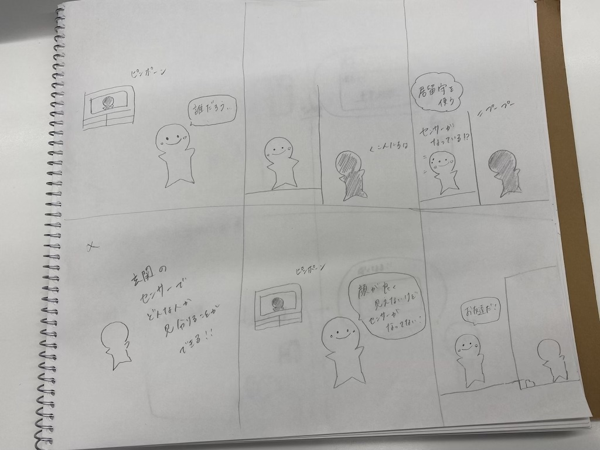

デザイン演習 第2回
どのような新しいサービスが考えられる？（ポストイット）
自分で考えたアイディア（スケッチ）

IoTで遠隔操作、管理させることでどのような新しいサービスが考えられるかということで、私はドアにセンサーをつけ
きた人がどのような人か判別できるサービスがあればいいと考えました。このようなサービスがあれば、家族や友人以外の人で知らない人が来た際、 センサーが反応し来た人が入れても大丈夫な人かを瞬時に判断することができます。
トップページに戻る